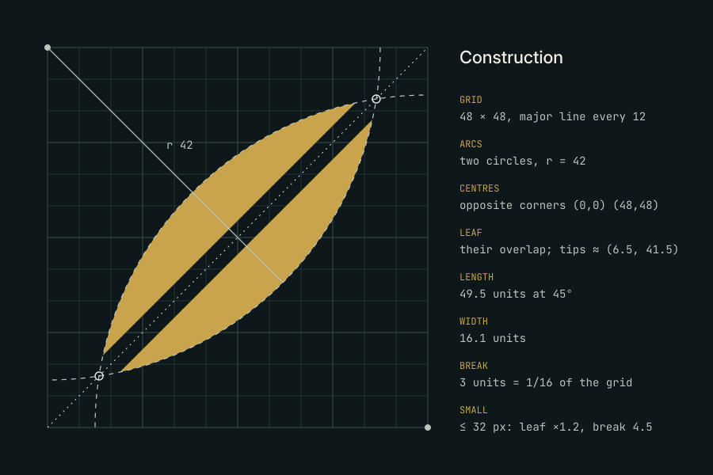
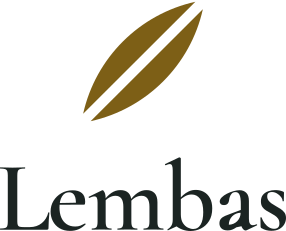
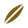
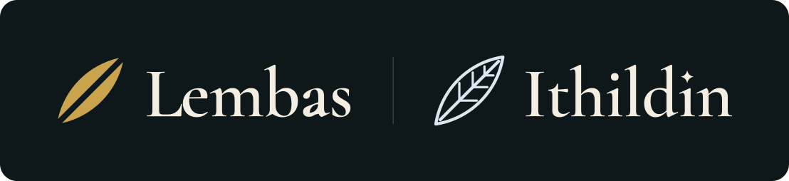
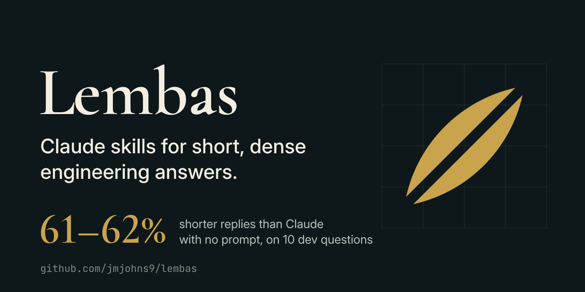
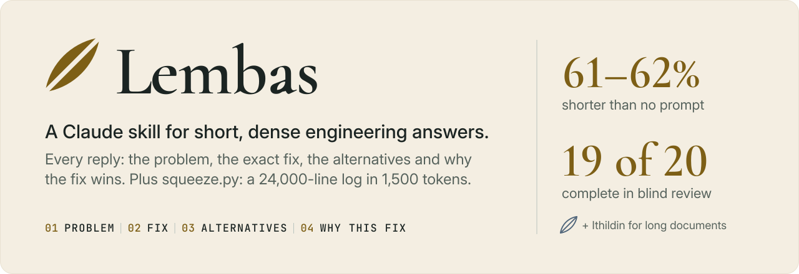

Lembas is a pair of Claude skills for engineers. Lembas makes answers short and dense; Ithildin reads long documents by mapping them first. This page is how the brand looks and speaks. It tries to practise what the product does: every section carries something you need.
01 · The idea
Elven craftsmanship, applied to engineering
The elves of Lórien made things that were light, exact and made to last, with nothing wasted. One wafer of their waybread fed a traveller for a day. Lembas promises the same in an answer: the problem, the exact fix, the alternatives and why the fix wins, in the smallest form that still holds all four.
Personality, in order
Precise.A staff engineer's code review, not a fantasy poster.
Quietly mythic.Felt before it is noticed. A stranger to the books sees a premium tool.
Economical.No ornament that doesn't carry meaning.
Trustworthy.Numbers with their method. The voice never oversells.
The test for every decision: would it look at home on the Linear or Stripe website, and would a Tolkien reader recognise the reference? Both answers must be yes.
Three directions
A. Folded leaf chosen
A mallorn leaf at 45°, broken once along its midrib. In the books, lembas is carried wrapped in mallorn leaves that keep it whole, and a single wafer is enough for a day. The mark is both: the leaf that wraps the answer, and the one clean break of a dense thing split exactly. For a developer it reads first as a precise geometric glyph: two arcs and a straight cut, the way a staff engineer's diff is two sides and one line.
B. Broken wafer rejected
A square wafer snapped once, the small piece set apart. It is the most literal picture of compression, and it holds at 16 px. It lost because it reads as a slash or a crop tool before it reads as bread, and nothing in it would make a reader of the books smile.
C. Waymark seal rejected
The leaf brooch of Lórien as a seal: a ring, an upright leaf and a star at the crown, the badge given to the Fellowship. It has the most story and the least economy. Three elements collapse into a smudge at 16 px, and a ring with a star drifts toward heraldry and fantasy-game crests.
02 · Logo
The folded leaf
Two circles of radius 42, centred on opposite corners of a 48-unit grid. Their overlap is the leaf; a straight break of 3 units, one sixteenth of the grid, splits it along the midrib. Nothing in the mark is drawn by eye.

Lockups
Horizontal · default

Stacked · square spaces

Mark only · avatars, favicons
Full colour on Anduin Night
One colour · black
One colour · white
The wordmark
Cormorant Garamond SemiBold, tracked −0.008 em, with L–e closed up a further 0.03 em. It carries one detail: the counter of the a is a leaf at the mark's 45°. At text sizes it is an ordinary a; at display sizes it is the leaf. Always use the outlined file, never retype the name.
Clear space
Keep clear space equal to the cap height of the L on every side of a lockup. For the mark alone, the 48-unit box already includes it: never crop inside the box.
Minimum sizes
Below 32 px, use the small mark: the leaf is drawn 20% larger and the break 50% heavier, so the break stays a full pixel wide at 16 px.
Small mark · 16 px
Mark · 32 px and up
Horizontal · 96 px wide
Stacked · 64 px wide
Misuse
×Don't stretch or squash it.×Don't recolour it outside the palette.×Don't place it on busy imagery.×Don't close the break. It is the idea.×Don't rotate it off 45°.×Don't add glows, shadows or bevels.×Don't draw the Lembas leaf in outline; outline is Ithildin's.×Don't give Ithildin the gold; silver is its colour.
03 · Colour
Lothlórien at dusk
Most surfaces are Waybread or Anduin Night. Gold is gilding: the mark, one number, one rule. If a screen has more than about 5% gold, remove some.
The seven starting colours are unchanged. Six were added because the originals fail as text on the opposite ground: Mallorn Gold is 2.04:1 on Waybread, so text and marks on light use Gilt; Lórien Green is 2.45:1 on Night, so green on dark uses Lórien Leaf; Ithildin vanishes on Waybread, so the sub-brand uses Starlight on light.
#C9A44C
Mallorn Gold--mallorn-goldAccent on dark. Gilding: marks, rules, one highlight
#7D5F16
Giltadded--giltGold for text and marks on light surfaces
#3E5C47
Lórien Green--lorien-greenSecondary; links and badges on light
#8FB59A
Lórien Leafadded--lorien-leafGreen on dark surfaces
#B9C4BE
Silver Bark--silver-barkBorders and dividers on light; secondary text on dark
#DCE6EE
Ithildin--ithildinIthildin sub-brand; moonlit highlights on dark
#4E6479
Starlightadded--starlightIthildin on light surfaces
#0E1719
Anduin Night--anduin-nightDark background
#172427
Anduin Deepadded--anduin-deepRaised surfaces on dark
#F4EEE2
Waybread--waybreadLight background
#E9E1D1
Waybread Deepadded--waybread-deepRaised surfaces and code on light
#1B2422
Ink--inkBody text on light
#56625C
Mossadded--mossSecondary text on light
Contrast, light surfaces
Sample
Pair
Ratio
WCAG
Aa
--ink on --waybread
13.75:1
AA body
Aa
--moss on --waybread
5.51:1
AA body
Aa
--gilt on --waybread
5.16:1
AA body
Aa
--lorien-green on --waybread
6.43:1
AA body
Aa
--starlight on --waybread
5.31:1
AA body
Aa
--ink on --waybread-deep
12.22:1
AA body
Aa
--gilt on --waybread-deep
4.59:1
AA body
Contrast, dark surfaces
Sample
Pair
Ratio
WCAG
Aa
--waybread on --anduin-night
15.73:1
AA body
Aa
--silver-bark on --anduin-night
10.13:1
AA body
Aa
--mallorn-gold on --anduin-night
7.70:1
AA body
Aa
--ithildin on --anduin-night
14.37:1
AA body
Aa
--lorien-leaf on --anduin-night
8.00:1
AA body
Aa
--mallorn-gold on --anduin-deep
6.75:1
AA body
Aa
--silver-bark on --anduin-deep
8.88:1
AA body
Never for text
Sample
Pair
Ratio
Use
Aa
--mallorn-gold on --waybread
2.04:1
not for text
Aa
--silver-bark on --waybread
1.55:1
not for text
Aa
--lorien-green on --anduin-night
2.45:1
not for text
Aa
--ithildin on --waybread
1.10:1
not for text
AA needs 4.5:1 for body text and 3:1 for large text (24 px, or 18.7 px bold). Ratios are computed from the hex values with the WCAG 2.2 formula.
04 · Type
Carved, then clean
Three open-licence families (SIL OFL), all on Google Fonts and copied into brand/fonts/. The serif is for names and numbers, the sans does the work, and the mono is for anything a user might type.
Display XL Cormorant 600 · 64/1.05
Waybread
Display L Cormorant 600 · 44/1.1
One bite is enough
Number Cormorant 600 · lining
61–62%
Heading Inter 600 · 20/1.3
Reading large outputs
Body Inter 400 · 16/1.6
Cron runs jobs with a minimal environment, so python3 from pyenv and any relative path fail, and cron discards the error.
Small Inter 400 · 14/1.5
Caveman's 10 developer questions, 2 runs, Claude Opus 5.5.
Code JetBrains Mono 400 · 14/1.6
npm test 2>&1 | python3 scripts/squeeze.py
Label JetBrains Mono 500 · 12 · +0.1 em caps
01 · Problem
Cormorant only at 24 px and above. Its hairlines break up below that.
Use lining figures for numbers in Cormorant (font-variant-numeric: lining-nums). Its default old-style figures drop the 9 below the line.
Never set body copy, UI or code in the serif. Never set the wordmark in the sans.
05 · Iconography
Line, on a grid
24-unit grid, 1.5 stroke, round caps and joins, no fills except a single highlighted band. Diagonals run at 45°, the leaf's angle. Icons describe an action (squeeze, map, find, read, cite); they are never decorative.
squeezemapfindreadciteleaf
06 · Ithildin
The waybread and the moon-letters
Ithildin is the silver script on the Doors of Durin, visible only where moonlight falls on it. The skill reads long documents the same way: it maps the whole, then lights up only the sections a question needs.
The two marks are one leaf drawn two ways. Lembas is solid gold: substance, compressed. Ithildin is the same leaf in silver line, with its veins showing: structure, revealed. Lembas's break and Ithildin's midrib sit on the same line, so each mark is the other's negative. The Ithildin wordmark's one detail is the dot of its last i, drawn as a star.

Ithildin on Night
Starlight on Waybread
One colour
Small mark · veins drop below 32 px
Silver for Ithildin, gold for Lembas. Never swap them, never mix them in one mark.
Ithildin may glow on dark, once per surface: a soft light behind the mark, never on text.
When the two appear together, Lembas comes first, and both are the same size.
07 · Voice and tone
Plain, exact, no hype
The brand speaks the way the skill answers: the cause, the fix, the condition, the number. Full sentences. No exclamation marks, emoji, superlatives or promises a benchmark doesn't back.
Don'tSupercharge your AI with blazing-fast, magical answers! 🚀
DoReplies are 61–62% shorter than Claude with no prompt. 19 of 20 were complete in blind review.
Don'tLembas is the ultimate cure for token bloat.
DoLembas cuts setup, recaps and offers of help. It never cuts code, numbers or warnings.
Don'tFear not, traveller! The elves have blessed thy logs.
Dosqueeze.py keeps every error, warning and stack trace, and collapses repeated lines.
Don'tWorks perfectly, every time.
DoOne answer in 20 still had a factual error. Method and data are in docs/BENCHMARKS.md.
Don'tOops! Something went wrong 😅
Dosqueeze.py: input is binary (PNG). Pass a text log, JSON or CSV.
One flourish per surface
Each surface (a page, a release note, a card) may carry one line or title with a Tolkien echo. It must still make sense to someone who hasn't read the books.
Not all who wander are lost, but their logs usually are.
Light where you need it. Ithildin, docs header
Sanctioned section titles: Provisions (install), Waymarks (docs navigation), Read by moonlight (Ithildin's read step). Use one, not all three on the same page.
08 · Tolkien references
Felt before noticed
Draw from ideas in the books (waybread, mallorn leaves, moon-letters, the craft of Lórien), never from any film or game adaptation.
Name things after objects and ideas, not characters or places a reader would need to know.
At most one reference per surface, and it must still work for a reader who doesn't know the source.
Quote no more than a few words of the books verbatim. Paraphrase, or riff as in the flourish above.
Say plainly where the name comes from, once: "The name comes from The Lord of the Rings." Imply no endorsement.
Never
Film stills, film or studio logos, or lettering that imitates the film title treatment, including fan fonts that copy it (Ringbearer, Aniron).
The One Ring inscription, maps of Middle-earth, or the likeness of any character.
Tengwar as body text or texture. Version 1 uses none; a future single-glyph accent needs checking by someone who reads it.
Parchment backgrounds, dragons, swords, Celtic knots, blackletter, or runes glowing on every surface.
09 · Applications and assets
Where it lives

social/og-image.png · 1280×640 · GitHub social preview

readme/hero-light.svg and hero-dark.svg
README hero
<picture>
<source media="(prefers-color-scheme: dark)" srcset="brand/readme/hero-dark.svg">
<source media="(prefers-color-scheme: light)" srcset="brand/readme/hero-light.svg">
<img alt="Lembas: a Claude skill for short, dense engineering answers." src="brand/readme/hero-light.svg" width="100%">
</picture>
Badges
Shields.io always draws badge text in white, so badge values use Gilt, Lórien Green and Starlight only. Ready-to-paste Markdown is in badges.md.
Marks, wordmarks and lockups for Lembas and Ithildin in color, color-dark, black and white; small marks for 32 px and below; construction diagram; family pair
icons/
favicon.svg and .ico (16, 32, 48), apple-touch-icon-180.png, icon-512.png, github-avatar-500.png
social/
og-image.svg and .png
readme/
hero-light.svg, hero-dark.svg, README-snippet.md
concepts/
The three explored directions
fonts/
Static instances of the three families with their OFL licences
_build/
The Python that generates every file above. Change a value there, not in an SVG.